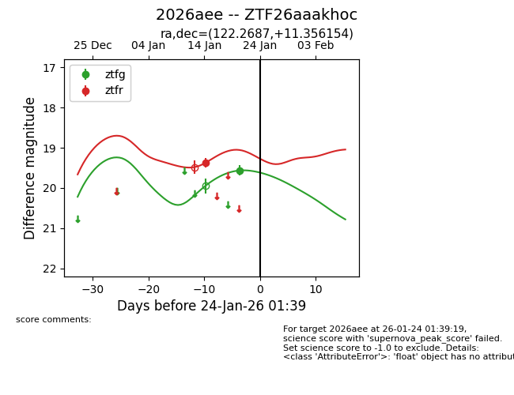
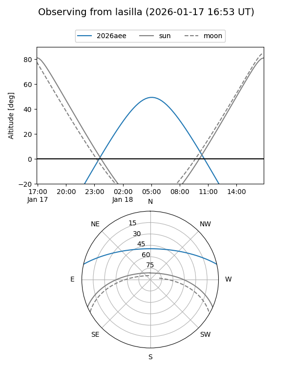
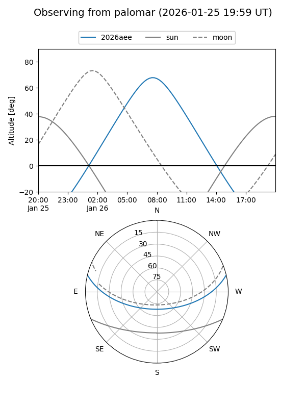
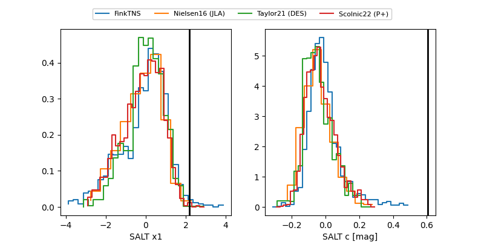

2026aee
Target 2026aee at 2026-01-23 06:31
Aliases and brokers:
FINK: link
Lasair: link
ALeRCE: link
TNS: link
YSE: link
alt names
ZTF26aaakhoc (ztf,fink_ztf)
2026aee (tns,yse)
Coordinates:
equatorial (ra, dec) = 122.2687,+11.35615
equatorial (HMS+DMS) = 08:09:04.49,+11:21:22.16
galactic (l, b) = (211.2791,+22.31827)
Flags:
Photometry:
last ztfg=19.56, ztfr=19.37
1 ztfg, 1 ztfr detections
Lightcurve

Visibility


Additional plots
